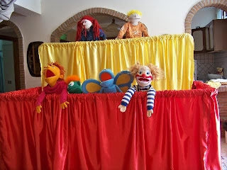

Italy Puppet Ministry
7/12/2009
{kind=link}

Dear Clinton & Adelia:
I don't know what all I've told you about Leia & Nicolas ( my daughter and husband) and their ministry in Italy, but they are now (along with a team) starting a puppet ministry! Here is a photo she sent of the stage they made out of PVC pipes (I think that's the correct way to say what the pipes are). I'm not sure why she didn't use dark curtain material because I think the bright colors take away from the puppets, but it still looks nice. They don't live far from the center of the Italy earthquake and they've taken several trips there to minister with puppets. I have many puppets from the ministry I did in Harper and I'm going to donate them to their ministry.
I am very excited now to get the (Maher) Vent Course to Leia because she will make an AWESOME ventriloquist and can use it like crazy in Italy! They have nothing like this in the areas they work at, from what I understand. I hope someday she is able to buy a vent figure. One step at a time. I will email you more info about what they are doing with their ministry. Thank you for mailing the Course to Italy! She doesn't know it is coming yet, but I'm going to tell her to look for a surprise from the Littleton, CO! I'll let you know when it finally arrives in Italy! Karen Hostetler
* * * * *
Note: Leia is my first cousin's ganddaughter. I have no idea what cousin relation term I am qualified to call her, but any time a ventriloquist or puppeteer is added to our family tree, you will find me smiling! Clinton